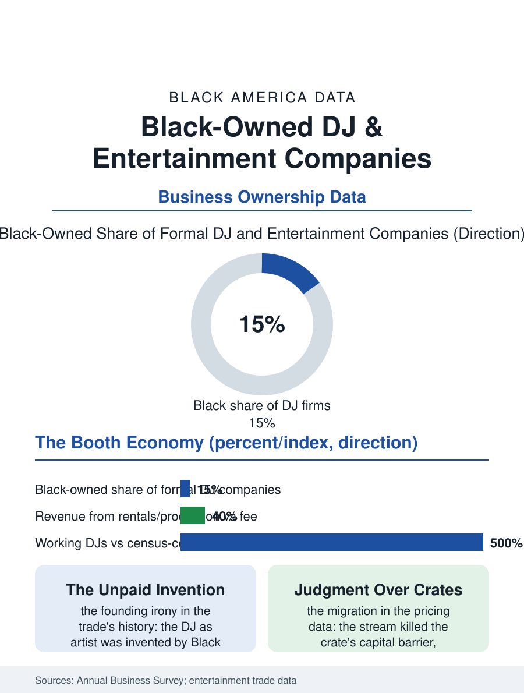

Black Business
Playing the Room: Black-Owned DJ and Entertainment Companies
The DJ was invented Black, formalized slowly, and now runs production companies whose real product is the room's emotional arc. The DJ file.

The DJ is the Black celebration's essential worker and its most romantic founder story: two turntables, a record collection, and a reputation, scaled in the modern era into entertainment companies with production, lighting, and photo booth fleets. The business census folds the trade into the entertainment categories, counting the formal companies in the hundreds and missing the informal thousands entirely. This article reads the DJ file.
From Crates to Companies
The trade's founding technology is Black America's own invention in its modern form: the DJ as artist was created in the Bronx's parks and the disco's booths by Black and Latino innovators whose techniques, the breakbeat, the scratch, the blend, became the global entertainment industry's foundation, and the working DJ's business descends from that invention with the royalty unpaid, the trade's founding irony. The local file is the weekend's: the wedding and the reunion, the prom and the cookout, the club residency and the corporate holiday party, booked on reputation and the referral chain the celebration economy runs on. The formalization arc is the file's business content: the hobbyist with the controller becomes the registered company with the liability policy the venues require, the second rig and the subcontracted second DJ, the lighting and photo booth inventory whose rental margins exceed the performance fee's, until the company is an event production firm whose founder's name is the brand and whose presence at the booth is the premium tier. The census sees only the formalized tip, the promoter and entertainment categories' Black firms numbering in the hundreds with employer status rare, while the trade's own directories and the platform data, the booking sites' rosters, count the working DJs in the many thousands, the gap between the counts being the informal economy's standard signature in the business section.
The Playlist Economy
The modern trade's economics were repriced by the stream: the record pool and the crate's capital barrier fell when the library became a subscription, and the differentiator migrated from possession to judgment, the read of the room that the wedding file's clients are actually buying, the sequence that moves the grandmother and the college roommate onto the same floor. The pricing data in the trade surveys show the wedding DJ's fee climbing with the celebration economy's general inflation, the professional tier's four-figure Saturdays now standard in the metros, while the club tier's economics stagnated under the venues' door-split models, pushing the trade's center of gravity toward the private event, the file's migration from the culture's stage to its ceremonies. The corporate and brand tier above the wedding, the product launch, the conference, the sponsored set, allocates by agency relationship and pays the trade's top rates to the names the culture files made, the celebrity DJ whose fee is a marketing line. The woman DJ's rising share is the trade data's clearest trend, the sisterhood's crews and brands correcting a booth whose masculinity the history naturalized, and the youth pipeline, the controller in the bedroom and the school of the livestream, now mints working DJs before the driver's license, the youngest founder pipeline in the entertainment files.
The Essential Worker
The DJ file closes on the trade's civic essence: the DJ is the celebration's officiant of joy, the professional trusted with the gathering's emotional arc, a trust the community prices in the referral chain's currency and revokes in a single failed Saturday. The company's durability rests on that trust compounded, the family whose weddings, reunions, and repasts the same name has scored across thirty years being the trade's version of the multigenerational firm, its goodwill carried in the culture's memory rather than any registry. The formal economy's slow capture of the trade, the venues' insurance requirements, the platforms' booking rails, the tax system's visibility, will keep moving the census count toward the true one, and the trade's elders have made their peace with the paperwork as the price of the corporate tier. The bureau counts the companies in the hundreds. The culture counts the DJ among its essential workers since the first park jam, and the file's last entry is the working definition the trade offers itself: anybody can play the songs. The DJ plays the room, the room is the community at its happiest, and the hands on the decks, Black since the invention, are the celebration's oldest technology and its newest company, same as it ever was.
More in Black Business
Black-Owned Businesses: Counts, Receipts, and the Representation Gap
About 161,000 Black-owned employer firms and three million solo ventures: how the Census Bureau counts Black business ownership, where firms concentrate, and the gap between population share and business share.
Black Median Net Worth: The Wealth Gap in Federal Reserve Data
The Federal Reserve puts Black median family net worth at $44,900, against $285,000 for White families — about 16 cents on the dollar. The widest gap in economic data.
Black Buying Power: The $1.8 Trillion Consumer Economy
Black buying power is estimated at about $1.8 trillion — larger than the economy of most nations. What the figure measures, who produces it, and what it buys.
Source: U.S. Census Bureau, Annual Business Survey for promoters and entertainment services; DJ and events trade surveys.